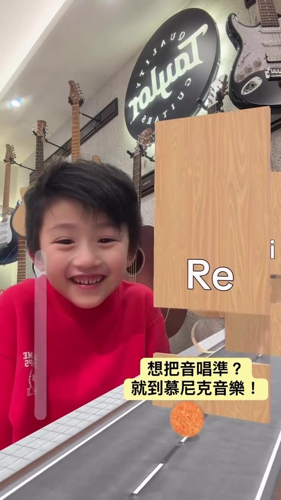
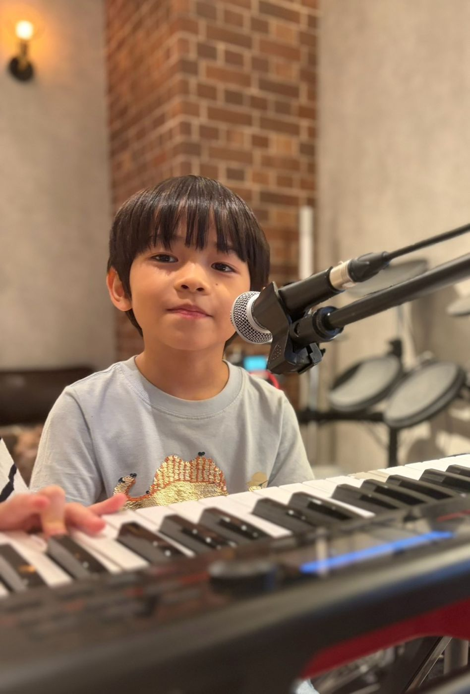
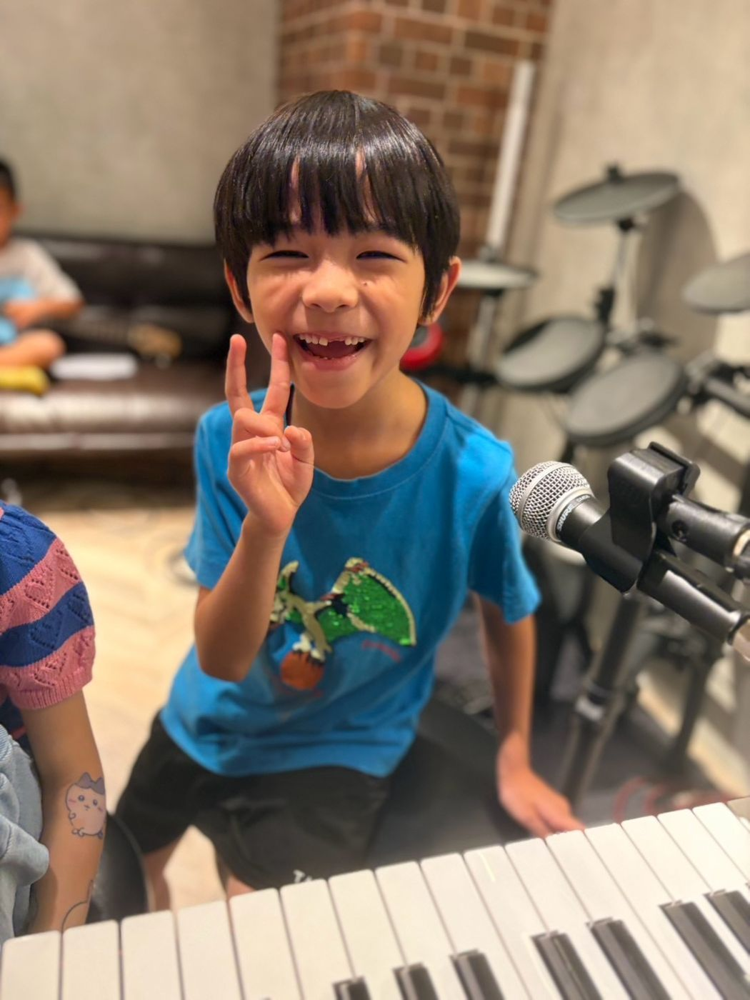

板橋歌唱班｜兒童與成人學唱歌・流行歌唱教學
很多人因為覺得自己唱歌不好聽、怕高音上不去或抓不到拍子，久了就不敢在大家面前開口。其實唱歌跟學樂器一樣，是可以透過正確方法練習的！慕尼克音樂板橋校區（國光國小正對面）的歌唱課，會從最基礎的呼吸與發聲開始帶起，陪你把音準和節奏一步步站穩，再把喜歡的歌完整唱完。兒童、成人與樂齡都可以學，提供個人班與團體班選擇，一堂課 50 分鐘，一期 12 堂。

歌唱課是怎麼練習的？
上課時我們不求一次塞進很多首歌，而是講究「把一首喜歡的歌好好唱完」。老師會先帶你建立穩定的呼吸支撐與放鬆的發聲習慣，接著再去對齊音準與節奏；當你發現自己在句子與句子之間換氣變順了、高音不再只靠喉嚨硬撐、節奏也能穩穩跟上伴奏時，開口唱歌就會變得既自然又有成就感。這就是慕尼克的板橋歌唱教學：不趕進度，一句一句把氣息、音準和拍子唱進身體裡。
在板橋學唱歌，課堂上會學什麼？
- 呼吸與發聲基礎： 找到省力、不傷喉嚨的發聲位置，學會用穩定的氣息支撐歌聲。
- 音準與節奏感： 訓練耳朵聽辨音高，把拍子對準，不再越唱越快或跟丟伴奏。
- 歌曲完整演繹： 掌握段落換氣與口氣變化，自信且完整地把一首喜歡的歌唱完。
- 現場樂團合奏： 有機會搭配現場的吉他、鍵盤、Bass 與爵士鼓，體驗當樂團主唱、和真實樂器合完一首歌的快感。
兒童、成人與樂齡都能依步調學習
不論是完全零基礎，或只是想把歌練得更好聽，老師都會依照每個人的聲音條件與程度來安排進度：
- 兒童學員： 從適合孩子音域的短句和耳熟能詳的歌曲練起，在開心的氣氛中培養音感與自信。
- 成人學員： 許多大人都是帶著一首「自己一直很想唱好的歌」來上課的。若是已出社會、平時工作忙碌的上班族，可參考時段彈性的「成人課程」。
- 樂齡學員： 退休後想透過唱歌活絡氣息、認識朋友，我們也會從最舒服的呼吸與熟悉的老歌、流行歌帶起，歡迎參考「樂齡專區」。
孩子熟悉的旋律、大人一直想唱好的那首歌、退休後想重溫的老歌——在板橋學唱歌，每個人都從自己的那首歌開始。
個人班與團體班的上課方式
- 個人班（一對一）： 由老師針對個人的聲音特質與目標歌單量身調整進度，排課時間較具彈性。
- 團體班： 和同伴一起練唱、互相激勵，也能練習合唱與和聲默契。團體班會依報名人數狀況開班，最新時段歡迎加入官方 LINE 詢問。
兩種班別皆為一堂課 50 分鐘，一期 12 堂。若遇事需請假，只要依規定提前請假，一期可以補課 3 次。來板橋學唱歌，可以一對一細修自己的聲音，也可以走進板橋歌唱班，和同伴一起練合唱與和聲。
當樂團主唱，和樂手一起站上舞台！
當歌聲與拍子練穩之後，還可以進入板橋校區的「樂團班」，和吉他、Bass、爵士鼓與鍵盤手一起合奏完整一首歌！此外，慕尼克也設有「親子樂團」，爸爸、媽媽可以和孩子一起組團上台（例如爸媽當主唱、孩子打鼓或彈琴），參加方式歡迎加入官方 LINE 詢問。新北板橋校區也會不定期舉辦成果發表，讓每位學員都有站上舞台享受掌聲的機會。
上課照片


上課地點與時間
教室地址： 新北市板橋區中正路 325 巷 47 號 1 樓（國光國小正對面）
營業時間： 週三、五 16:30–22:00；週四 14:00–22:00；週六、日 13:00–22:00（週一、二公休）；週二可預約開課，有需要請先來電或 LINE 詢問。
大眾運輸： 搭乘公車 307 至「港尾站」步行約 3 分鐘；距離捷運板橋站約 1.1 公里，出站騎乘 YouBike 約 5–7 分鐘即可抵達。
停車資訊： Times 中正路停車場（步行約 2 分鐘）、國光公園日月亭停車場（步行約 4 分鐘）。
想先看別的樂器，有板橋爵士鼓課、新北板橋吉他課、新北板橋鋼琴課、板橋樂團班，還有板橋 Bass 課。
常見問題 FAQ
以前從沒上過歌唱課，可以直接學嗎？
可以的！課程會從最基礎的呼吸、發聲與音準開始帶起，一步一步陪你把想唱的歌唱完。
幾歲可以開始學唱歌？
兒童和成人都可以學。如果不確定孩子目前的發音與專注度是否適合開課，歡迎先透過官方 LINE 與老師確認。
大人也可以學歌唱嗎？
當然可以，完全零基礎也非常歡迎！若是已出社會、只有平日晚上或週末有空的學員，可以參考我們的成人課程時段。
退休後想學唱歌，適合嗎？
非常適合！我們會從放鬆的呼吸、發聲，以及您熟悉且想唱的歌曲開始帶起，完全零基礎也沒問題，歡迎參考樂齡專區。
覺得自己天生唱歌不好聽，還適合來上課嗎？
非常適合！歌唱課的目的，就是幫還沒抓到訣竅的人把呼吸、音準和節奏練穩。只要用對發聲位置與換氣方式，聲音就會有明顯的改變。
歌唱課一堂多久？一期幾堂？
一堂課 50 分鐘，一期 12 堂。預約時段請撥打手機 0939-239-219、市話 02-8965-2288，或加入官方 LINE 詢問。
新北板橋歌唱課在哪裡上？
教室位於新北市板橋區中正路 325 巷 47 號 1 樓，就在國光國小正對面。
想學唱歌，可在官網填表，或加入官方 LINE，告知想唱的曲子。
在官網填表預約加入官方 LINE撥打 0939-239-219撥打 02-8965-2288非營業時間或老師帶學生演出時，市話可能無人接聽，請改撥手機。